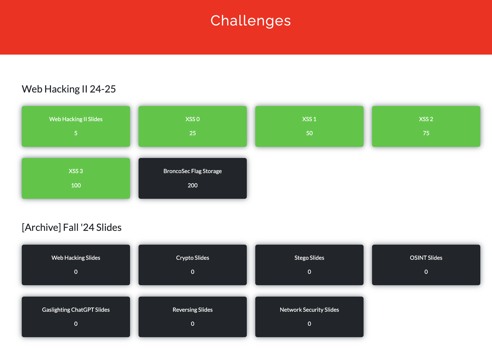

In the HCI Lab, I am a developer collaborating with a team under Professor Lukoff to build an AR tour
of the Santa Clara University campus highlighting Ohlone history and culture on the land.
We previously developed a web-AR version of the tour using 8th Wall, HTML, CSS, Javascript, and A-Frame
before transitioning to create an app version of the tour using Unity, C#, Lightship VPS, and ARFoundation.
On both platforms, I designed, developed, and tested location-based AR experiences, map features to support navigation,
onboarding screens, live captions that sync with the narration, and scanning popups.
Some highlights from the projects include being a finalist for Best Societal Impact at the 2024 Auggie Awards
and being the Grand Prize Winner of Niantic's 8th Wall Explore Together Challenge.
SCU Healthcare Innovation and Design Lab
Research Assisstant
As a research assisstant in the Healthcare Innovation and Design Lab under Dr. Akbari,
I have worked on applying interpretability techniques like Grad-CAM to breast cancer detection
models. This includes performing literature view on machine learning interpretability, CNNs
and Transformers, and breast cancer image analysis, in addition to writing code to train
a VGG model on both ultrasound and mammogram images and apply Grad-CAM to visualize important regions
in the images.
SCU Computational Chemistry Lab
Research Assisstant
I wrote Bash scripts to run Turbomole commands to estimate metalloenzymes’ energy and perform calculations for a benchmark study,
calculated reaction and barrier energy in Excel, wrote markdown documentation, studied intro to quantum chemistry under Dr. Grotjahn.
SCU Biomedical Engineering Society
Vice President
As vice president, I help the president lead board meetings and check in with board members
to plan and promote weekly events and other professional development opportunities. As a freshman,
I also worked on project to analyze EEG waves to predict sleep stage using neural networks and fourier transform.
In previous years, I was also a freshman representative and social-media co-chair.
Women in Cybersecurity
President
As president, I set the agenda for and lead board meetings to plan events, help lead presentations during weekly
workshops, and develop and maintain our chapter website using ReactJS.
Nurix Therapeutics
Software Intern
I worked on 5 projects during my internship at Nurix Therapeutics:
Data Transformer API: I developed an API to transpose and pivot data. Through this project, I learned about API development with ASP.NET Core, containerizing with docker,
API documentation with Swagger, unit testing, LINQ commands, and testing APIs with Postman.
Master Data Catalog API: I implemented an CRUD API to retrieve terminology data using the clean infrastructure and gained experience
with using Moq and in-memory databases to mock data for unit testing.
Assay Request Management API: I implemented an API to retrieve assay data from a database and update status, which helped me gain experience with working with more complex relational
databases and using pgAdmin and SQL commands to view data.
Bug Resolution for Compound Search Website: I used the Jira API to automatically create tickets for bug reports, worked backwards from the UI to debug problems in the
larger codebase, and learned to rebase branches using git.
Login Page Update and Excel Export: I updated a pharmacology website using React, enhancing my knowledge of React states and experience with implementing Bootstrap components.
SCU American Institute of Aeronautics and Astronautics
Electrical Team Member
I was a part of the electrical team participating in the Cansat Competition's Planetary Probe
Lander Mission, where we worked towards building a container that can be launched about 700 meters
into the air, release a probe with a heat shield and parachute, decend at a specified rate, and
raise a flag once the probe has landed. Personally, I have researched and selected sensors, selected
communication and data handling components, planned out our ground control design, documented
software telemetry format, designed the electrical subsystem testing plan, and created the electrical
power block diagram.
FRC Team 1967
Programming Committee Lead
In FRC Robotics, I worked with a team to build a robot that is about 100lbs with different mechanism to
compete a different game each year. Throughout my time on the team, I wrote and troubleshot
code for various mechanisms, including autonomous, chassis, flywheel with different shooting speeds, vision,
a turret that can turn both manually and automatically, and manual and automated climb. This included
coding motors, encoders, gyros, limelight, color sensors, pneumatics, and more in
C++ and Java.
In addition, as a programming lead, I coordinated programming subgrounds, communicated
design plans with other committees, and worked with mentors. Outside of programming, I also planned and lead
Chassis in a Day, Kickoff, the Young Women Engineering Symposium, workshops on Arduino and Driving, a module
to introduce 26 students to programming, and award submissions.
Highlights of our season include winning the
2021 Calgames Innovation Award for our vision system and the 2022 Silicon
Valley Regional Judge's Award for general robot design and outreach.
Chemistry Lab
Teacher's Assisstant
As a TA, I answer questions and guide students through weekly general chemistry labs (CHEM 11 and CHEM 12), which
includes showing them how to use lab equipment and explaining chemistry concepts. After labs, I also provide personalized feedback while grading lab notebooks.
Association of Computing Machinery
Broncosec Public Relations Chair

During my freshman year, I was a Broncosec Underclassman Represenative, where I attended weekly workshops and Capture the Flag competitions and gave feedback from an underclassman perspective.
During my sophomore year, I was a workshop coordinator, where I organized weekly workshops on various cybersecurity concepts (cryptography, OSINT, John the Ripper, steganography, Wireshark, XSS, reversing, magic numbers, CTF challenge reviews, etc.),
which involved leading presentations, developing workshop challenges, and creating slides.
Currently in my junior year, I am a PR Chair, where I created flyers, send out newsletters, and update our instagram to advertise weekly events. I also developed challenges for BroncoCTF.
Moblize
Software Intern
I implemented camera features using AngularJS for a business card scanner application and updated their website to advertise product using
Wordpress following feedback from marketing designers.
AI Camp
At AI Camp, my team and I worked on building an Air Canvas
project that can take in live footage from the user's webcam, detect the user's hand guestures (thumbs up,
thumbs down, palm, fist, point), and use that to allow the user to draw on the canvas. We also included features
for the user to change their brush to any color of the rainbow based on vertical position, switch the brush to
erase, increase/decrease the brush size, and upload and image for the canvas' background. The computer vision AI
aspect of this project involved using YoloV5, web scraping, labeling images, and model
analysis, and the website the Air Canvas was hosted on was programmed using HTML,
CSS, and Flask.